Case study · My product at dotXline
News that checks first.
FreshBit reads 51 trusted sources every 30 minutes, groups the articles about the same event and scores each story out of 100. You see what actually happened in design, UX/UI, AI and dev, and how sure it is.
- Role
- Founder · designed and built
- Company
- dotXline LTD
- Platform
- iPhone, iPad and Mac
- Built with
- Expo, React Native, SwiftUI via @expo/ui
- Status
- iPhone in TestFlight testing
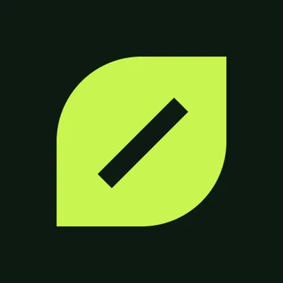
FreshBitConfirmed news for designers and developers.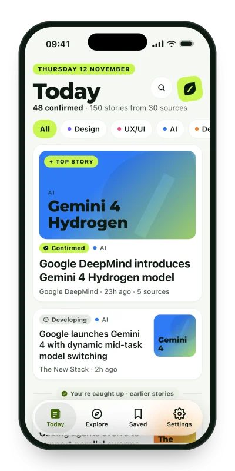
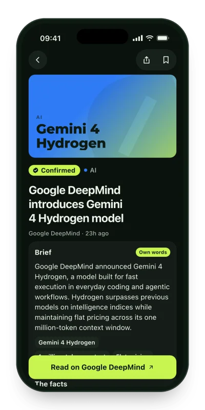
The problem
Too much news, too little certainty.
Design and dev news is spread across dozens of company blogs, changelogs, press sites and community feeds. Most aggregators show everything at once: rumours next to official announcements, the same story five times. The goal was one calm feed where every story carries a label that says how sure it is.
Words before pixels
- “Verified” became “Confirmed”An app can’t check that something is true. It can say who published it and how many independent sources agree. So the label became Confirmed by trusted sources.
- A source audit, tier by tierEvery feed was checked by hand. Official sources confirm on their own, press needs company, and community sites only add weight.
- Own words, always linkedFreshBit writes every headline, summary and brief itself, and “Read on …” opens the original. Images only when a publisher offers them or they carry an open licence.
- Few alerts, and earnedTop stories at most 3 a day, only when 2 or more trusted sources confirm them. One morning brief at the hour you pick.
How it works
Read. Match. Score. Then publish.
Step 1 · Sources
Read 51 trusted feeds
Company blogs, changelogs and release notes, plus established press and a few community sites. Every 30 minutes, all day.
Step 2 · Confirmation
Group the same event
Articles about one event are matched by rare words like product names and version numbers, and by meaning. Two blogs from one company count as one voice.
Step 3 · Credibility
Score it out of 100
Who published it, whether an official source confirms it, how many independent outlets agree, and any red-flag words. Rumours are never marked Confirmed.
Nothing reaches the feed until it passes the credibility check, and every score comes with its reasons in plain words.
Real screens
Five places, one calm feed.
The app, screen by screen
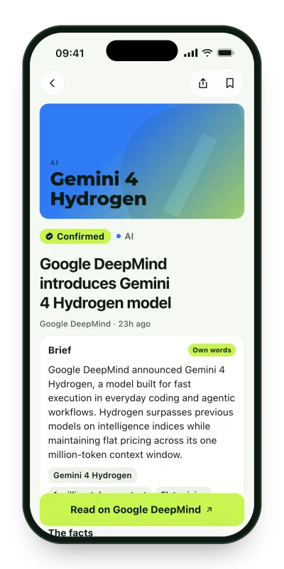
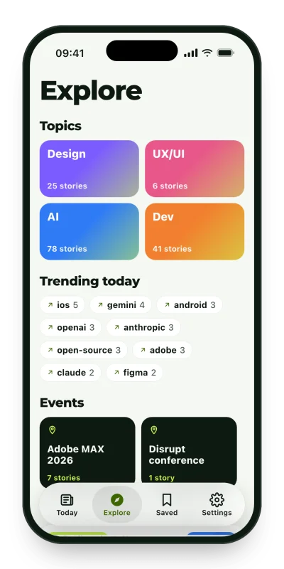
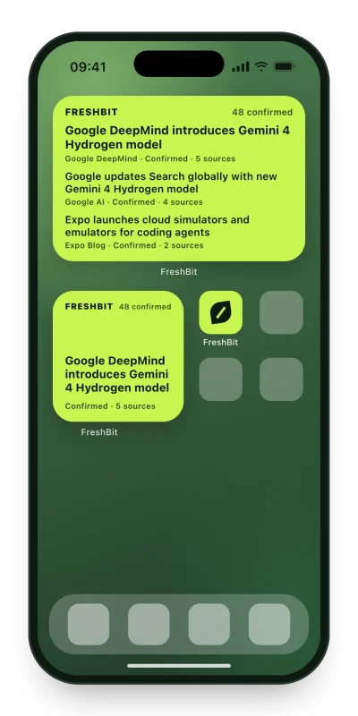
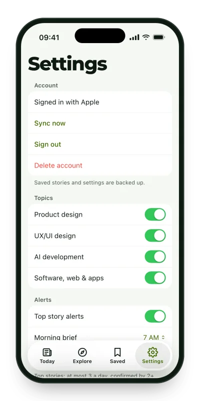
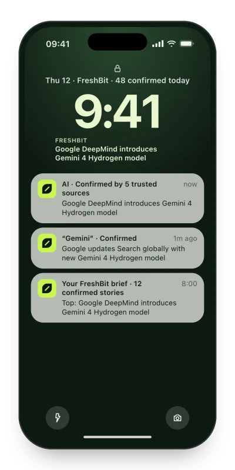
Light and dark
Dark mode isn’t an inverted light mode.
The same screens, dark
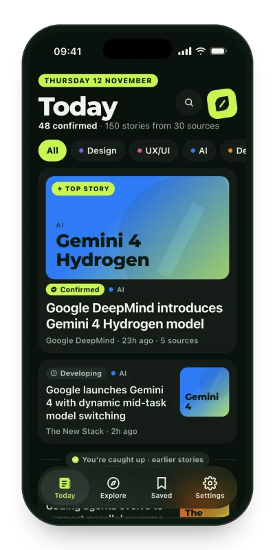
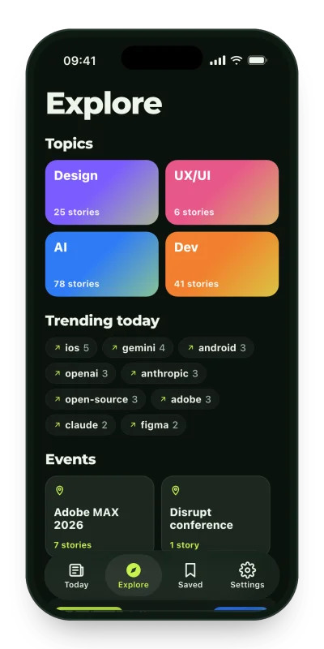
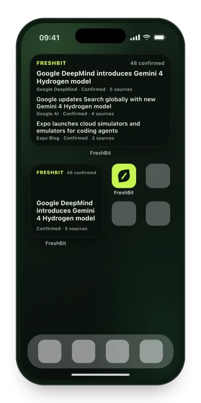
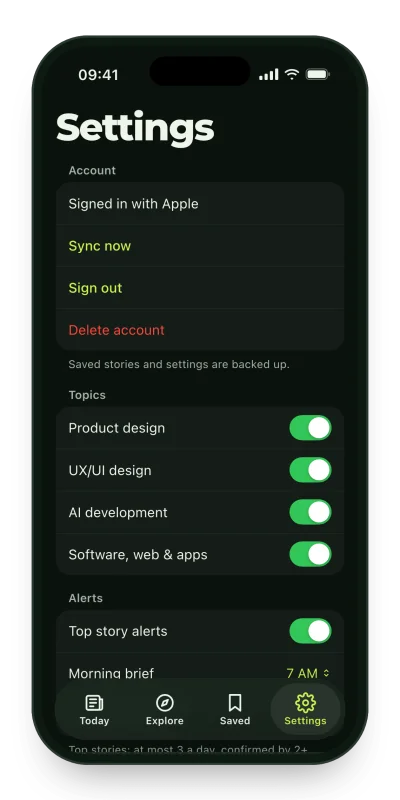
Two tuned palettes
The brand
Swiss minimal, with one loud colour.
Typography
Aa Bb Cc Dd Ee Ff Gg Hh Ii Jj Kk Ll Mm Nn Oo Pp Qq Rr Ss Tt Uu Vv Ww Xx Yy Zz
0 1 2 3 4 5 6 7 8 9 £ $ %
Reading text uses SF Pro with Dynamic Type, so it follows the size each person sets. Three rules: never lime for text on a light background, never a credibility state shown by colour alone, and no emoji as icons.
The icon: four concepts, all tested at 16 px
Tested on a real iPhone
- 11 TestFlight buildsThe app was reviewed from screen recordings of real use, and fixed build by build.
- The folding header went nativeA custom bouncing animation became Apple’s Liquid Glass morph, so it feels like the system.
- Lime stopped being text on glassLime on the light tab bar measured about 1.2:1. Light mode now tints the selected tab in the dark brand green, 6.8:1.
- Built for $0 a monthSupabase on the free plan, rare-word matching and free meaning search. Designed and built with AI-assisted development.
Next case study